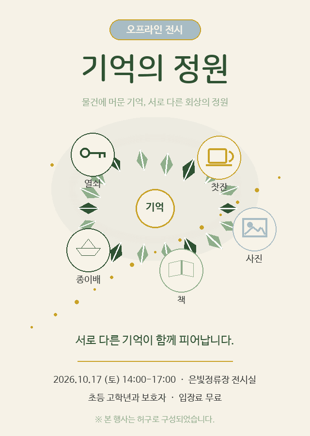

<!doctype html><html lang="ko"><meta charset="utf-8"><meta name="viewport" content="width=device-width, initial-scale=1"><title>기억의 정원 · 움직임과 소리</title><style>body{margin:0;background:#f7f3e8;color:#2f5233;font-family:system-ui,sans-serif}main{max-width:1000px;margin:40px auto;padding:20px;display:grid;grid-template-columns:minmax(260px,440px) 1fr;gap:40px;align-items:center}img{width:100%;border:1px solid #8fae8b;border-radius:12px}audio{width:100%;margin:12px 0 28px}h1{font-size:36px}p{line-height:1.7}small{color:#596b59}@media(max-width:700px){main{grid-template-columns:1fr}}</style><main><section><small>가상 전시 · 독립 재생 검수</small><h1>움직임과 소리</h1><p>같은 물건, 서로 다른 기억.<br>Keeper가 만든 애니메이션과 12초 오리지널 사운드입니다.</p><label for="wav">원본 WAV</label><audio id="wav" controls src="garden.wav"></audio><label for="mp3">MP3</label><audio id="mp3" controls src="garden.mp3"></audio><p>이 전시는 허구로 구성되었습니다.</p><small>프레임·디코딩·해시는 별도의 검수 기록에 보존됩니다.</small></section></main></html>